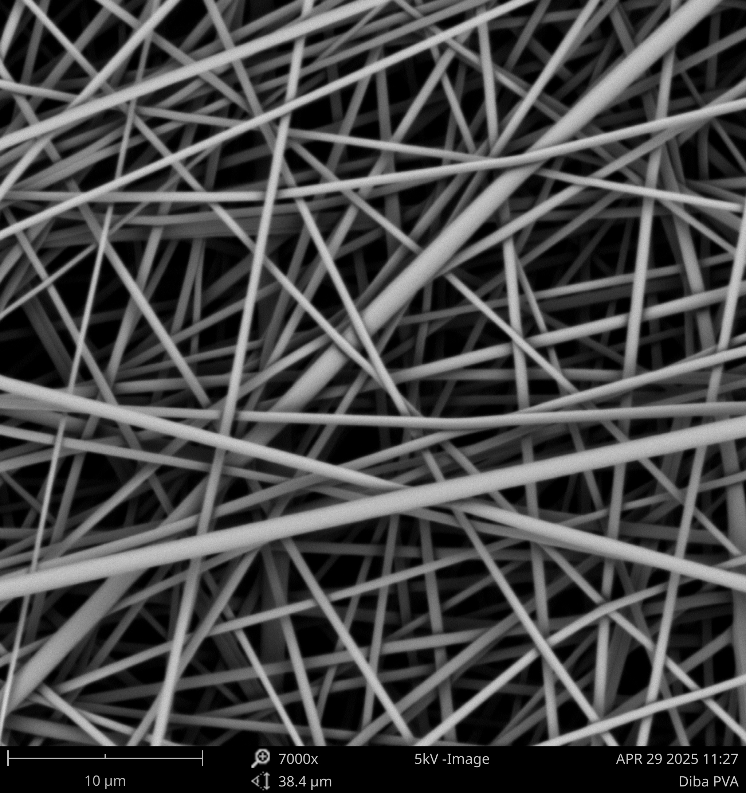

We are interested in translational pharmaceutics — developing drug delivery systems and biomaterials designed from the outset to have real impact on patients' lives.
Biological medicines — antibodies, cytokines, peptides — are powerful cancer immunotherapy agents, but they are fragile and difficult to deliver. We engineer biomaterial scaffolds that protect these molecules, control their release, and direct immune responses at the tumour site.
Our goal is to amplify local anti-tumour immunity while minimising systemic toxicity.

Electrospinning and electrospraying use electric fields to produce fibres and particles at the nanoscale. These processes allow us to create scaffolds that closely mimic the extracellular matrix and to encapsulate drugs with extraordinary precision.
We explore both fundamental process parameters and formulation design, working with synthetic and natural polymers to create tailored architectures and drug release profiles.
Getting drugs to the brain and spinal cord is one of pharmacology's hardest problems. We work on implantable, drug-eluting biomaterials for neural repair — including dural substitutes for use in decompression neurosurgery following spinal cord injury.
We also investigate convection-enhanced delivery (CED), a technique that bypasses the blood-brain barrier by direct infusion, to reach tumours and injury sites that systemic administration cannot.
Biologic medicines represent the fastest-growing class of therapeutics, but delivering them effectively remains a major challenge — they are large, fragile, and rapidly degraded. We develop formulation strategies using advanced polymer systems and biomaterials to protect and target proteins and peptides.
This work spans both systemic and local delivery routes, with particular interest in improving patient acceptability and reducing dosing frequency.
We work with clinicians, engineers, and industry partners to bring ideas from laboratory to clinic.
Get in touch